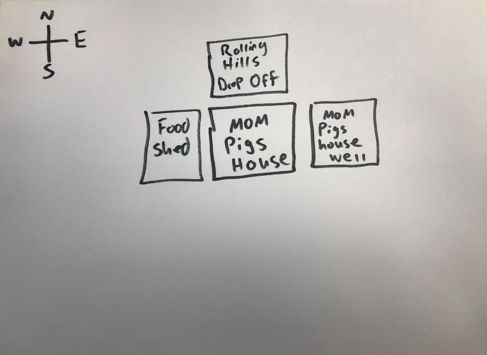
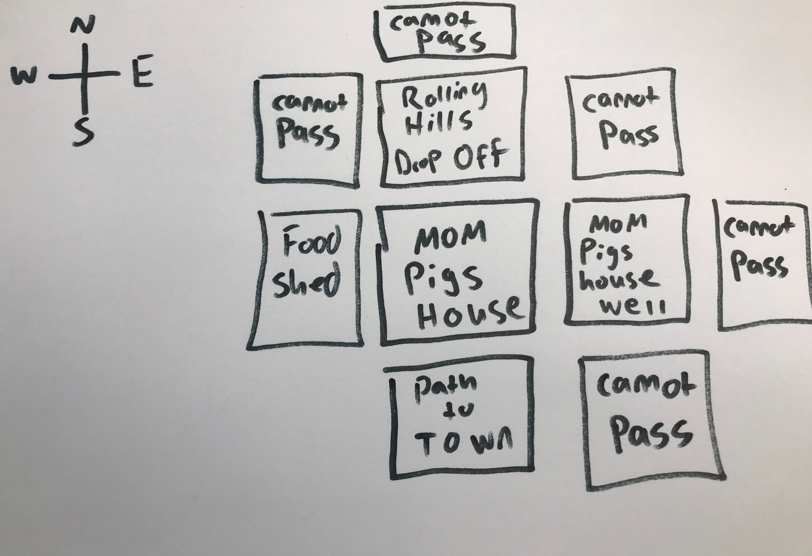
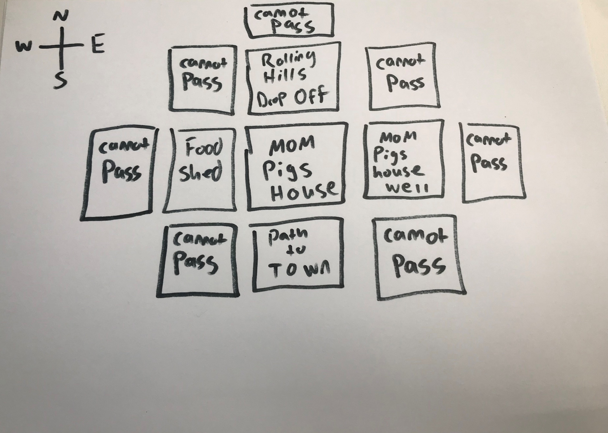

To start to create our map, imagine a grid and each box of the grid is going to be a new part of the map to your story. In this case let’s start our map at the home of this mom pig and her kids.
Draw a square in the middle of your paper and inside write Mom Pigs House. Now before we make more spots on our map, we need to make sure that we have a way to navigate our map, we will do that with a compass.
Compasses have a N (top) South (bottom) East (right) and West (left). For this example instead of using top, bottom, right, and left, we are going to use North, South, East, and West to represent those directions. Lets draw a compass in the corner of our map.

If you start at the Moms house what is N, S, E and W of the house? For this we must use our imaginations to imagine the type of place where the three little pigs grew up. To do this we can come up with something on our own or use the illustrations in the story itself. For this example, we will use the illustrations in the story itself.
From the image it looks like the pig family lived in some rolling hills with small trees and flowers everywhere. To have a house I feel like the pigs would need Food and Water to go with their shelter. As we see later in the story there are places nearby for them to go and collect food, like the turnip field or the apple tree. That leads me to think that they would have to have someplace to store the food they collected. So, let’s say to the West of Mom Pigs House there is their Food Shed where the keep all the food they collect. Now draw a box to the west of Mom Pigs House box draw a box and call it Food Shed.

To the East of Mom Pigs House let’s put a well so they can have fresh water. Draw another box to the East and label it Mom Pigs House Well.

I think to the North of the house Should be a drop off giving them a lovely view of all the rolling hills and trees and such. To the North of Mom Pigs House draw a box and label it Rolling Hills Drop Off.
Now to the South of Mom Pigs House I think should be a path to get to town, because the three little pigs need a way to get going to make that fortune. So, to the South of Mom Pigs House draw another box and label it Path to Town.

Now we have 5 boxes; Mom Pigs House, Mom Pigs House Well, Rolling Hills Drop Off and Path to Town, as well as our Compass. Let’s expand our Map. We mostly want our story to focus on the pigs heading to town and running into the wolf. So, I think the only way to go should be the path to town. How do we do this? We need to define the N, S, E, W of all our squares and make them go "nowhere". We will start this process at Mom Pigs House Well. Mom Pigs House is to the West of the well so draw boxes for North, South, and East around Mom Pigs House Well, and inside write Cannot Pass.

As you can see that already fills our East boxes for Rolling Hills Drop Off as well as Path to Town. Now we will draw boxes North and West of Rolling Hills Drop Off and write cannot pass in them as well.
Here Comes the Food Shed, draw boxes to the West and South of the Food Shed, and write cannot pass inside.
All that is left now is the South side of the Path to Town box. We want the path to go South, so for South we will draw our box and name it Path to Town 2.

We have now finished making our map for this first Key Point of the Story!